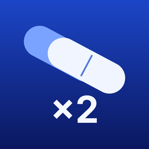

Dopamine greys out its Jailbreak button when the phone is already jailbroken. DoubleDose removes that lock inside a duplicated Dopamine, so you can press Jailbreak a second time and see what happens.
Turn it off any time in Settings → DoubleDose.